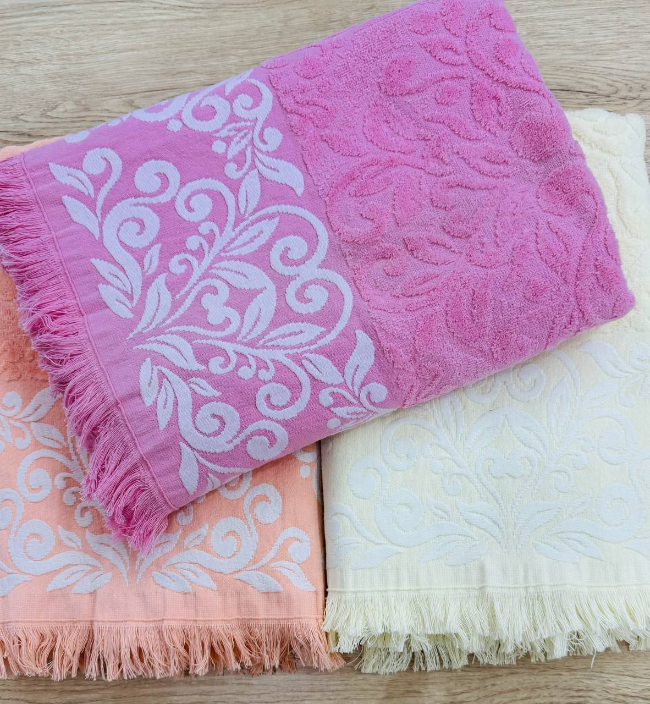
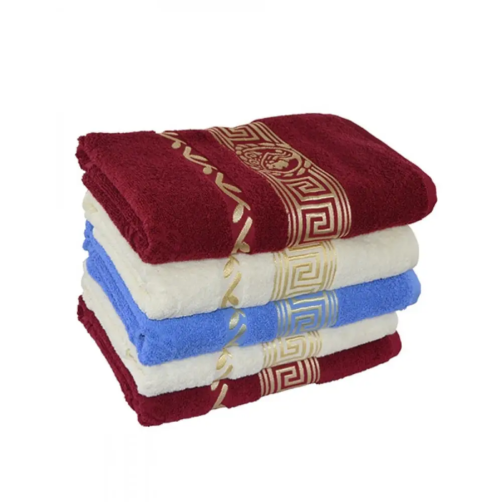
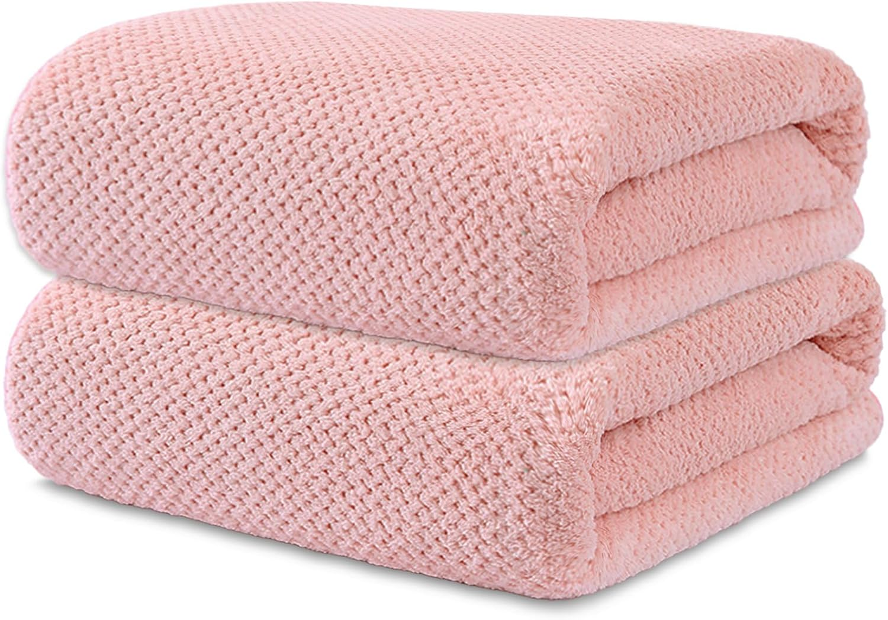
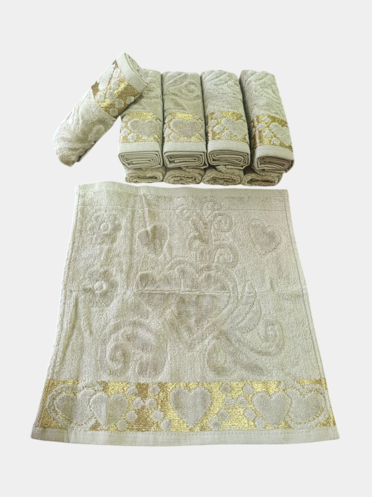
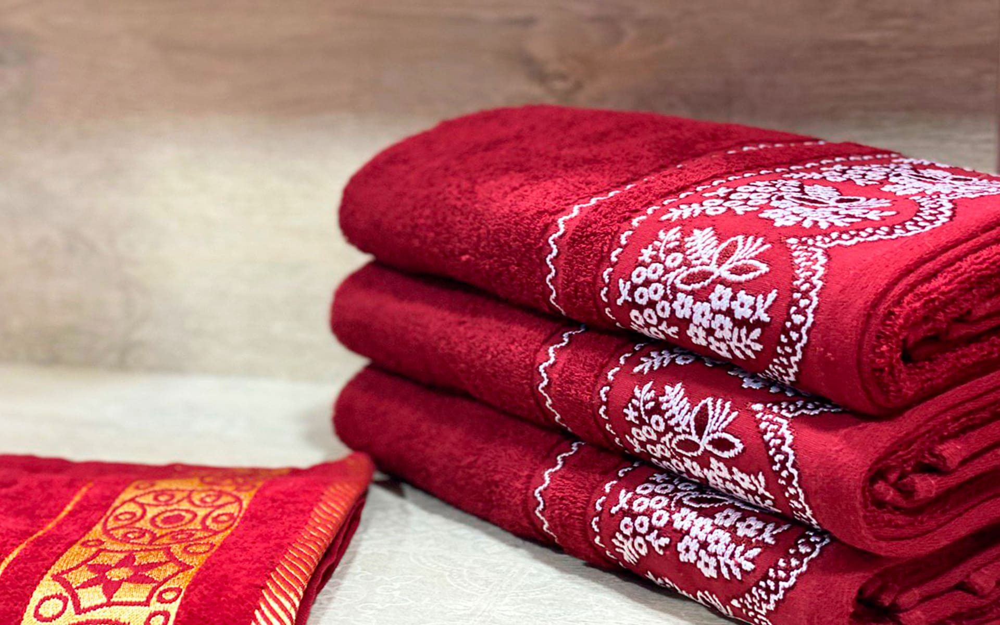
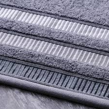
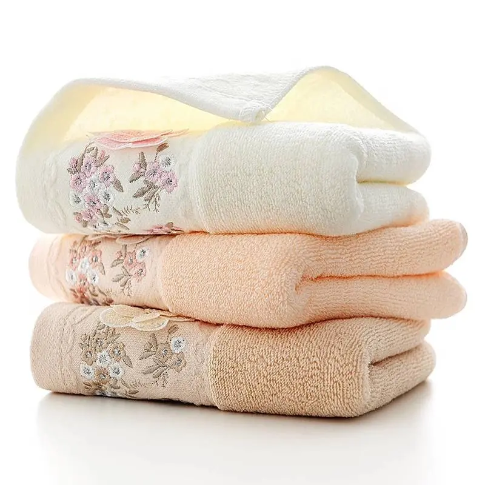
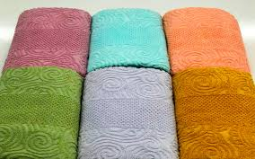

Sochiq ishlab chiqarish bo‘limi zamonaviy terry (halqali) to‘quv stanoklari bilan jihozlangan.
Ushbu texnologiya mahsulotning mustahkamligi va uzoq muddat xizmat qilishini ta’minlaydi.







